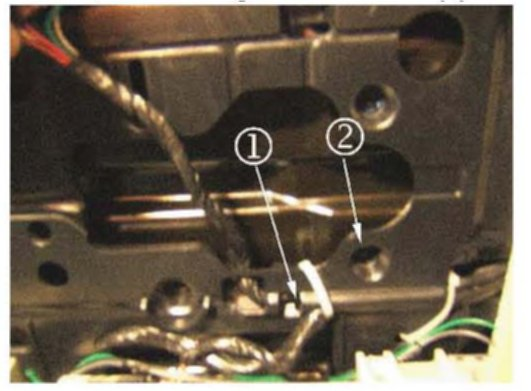

Entertainment System - Rear DVD Screen Inoperative/Blank
TECHNICALBulletin No.: 06-08-44-032B
Date: April 10, 2008
Subject:
Rear (2nd and *3rd Row (*where applicable)) DVD Screen Blank/Inoperative, Speaker Pop Noise, Battery Draw, OnStar(R) Audio Inoperative, Nav Screen Flashing, Radio Display Flashing (Inspect and Repair Wiring Harness if Necessary)
Models:
2007 Cadillac Escalade, Escalade ESV, Escalade EXT*
2007 Chevrolet Avalanche, Silverado, Suburban, Tahoe*
2007-2008 Chevrolet Equinox
2007 GMC Sierra, Yukon, Yukon XL, Yukon Denali, Yukon Denali XL*
2007-2008 Pontiac Torrent
with Rear Seat Entertainment System (RPOs U42, UUC)
Supercede:
This bulletin is being revised to add RPO UUC. Please discard Corporate Bulletin Number 06-08-44-032A (Section 08 - Body and Accessories).
Condition
Some customers may comment on any one of the following concerns:
^ Rear DVD Screen Inoperative.
^ Pop Noise in all speakers when cranking the engine.
^ Battery Draw or Battery goes dead.
^ OnStar(R) Inoperative.
^ No Sound from speakers.
^ No OnStar(R) Audio.
^ Navigation screen "Flashing on and off".
^ Radio display "Flashing on and off".
Cause
This condition may be due to an open or shorted wiring harness near the rear DVD display screen under the headliner.
Correction
To properly inspect for this condition perform the following steps:
1. Lower the rear DVD screen.
2. Remove the four retaining screws that hold the DVD to the headliner. In order to remove the screen assembly from the overhead bezel a firm tug should be applied to unseat the Z-axis clip.

3. Inspect the wiring harness for damage or improper routing near drivers side rear screw hole. Refer to the above graphic (callout # 1 shows proper routing callout # 2 indicates improper routing).
4. Repair the wiring harness as necessary. If the wiring harness is not damaged refer to SI for diagnosis and repair of the system.
5. Install the DVD screen and the four retaining screws.
Warranty Information
For vehicles repaired under warranty, use the table.

Disclaimer